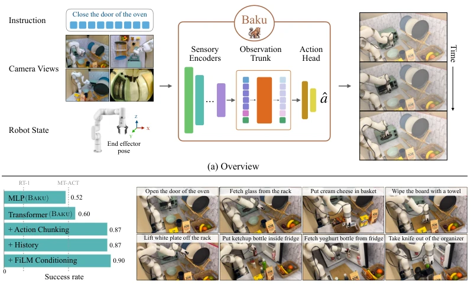
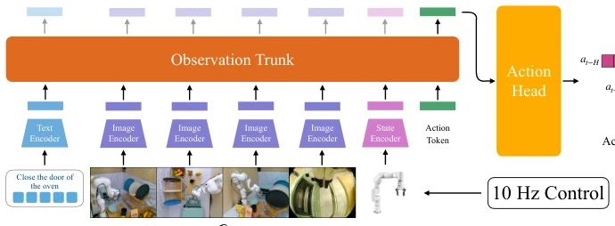
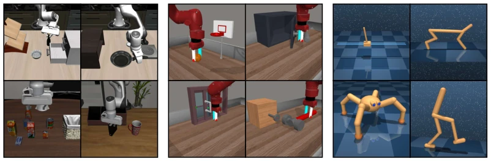

BAKU 这名字起得挺接地气，像厨房工具，实则是个多任务策略 Transformer。作者把 FiLM、Action Chunking 和独立 Action Head 拼凑在一起，声称“简单高效”。在 LIBERO 上确实猛，比 MT-ACT 高 36%，但现实世界开烤箱门这种精细活还是露馅了。架构没啥颠覆性创新，更多是工程上的“缝合怪”优化，把现有模块（如 VQ-BeT）适配到多任务框架里。虽然数据效率提升明显，但“通用”二字略显勉强，毕竟长程任务还得靠技能链式组合，目前只能单技能单干。此外，模型过大时反而过拟合，说明参数规模并非越大越好。
The name BAKU is quite grounded, resembling a kitchen utensil, yet it is actually a multi-task policy Transformer. The authors piece together FiLM, Action Chunking, and an independent Action Head, claiming it is "simple and efficient." It is indeed formidable on LIBERO, 36% higher than MT-ACT, but in the real world, fine-grained tasks like opening an oven door still reveal its shortcomings. The architecture lacks disruptive innovation, being more of an engineering "patchwork" optimization, adapting existing modules (such as VQ-BeT) into a multi-task framework. Although data efficiency improvement is significant, the term "general" is somewhat forced, as long-horizon tasks still rely on skill chaining, currently only capable of single-skill execution. Additionally, when the model is too large, it overfits instead, indicating that parameter scale is not necessarily larger is better.
The core pain point of embodied intelligence is the high cost of data acquisition, as physical execution is much more difficult than web crawling. Existing general policies like RT-1 [6] are strong, but inefficient in multi-task settings, often performing worse than single-task policies [75, 44]. Although MT-ACT [5] improved the Transformer architecture, it still struggles in data-scarce scenarios. The robotics field lacks large-scale ready-made data like CV/NLP, making multi-task policy training difficult. Therefore, there is an urgent need for an architecture that can efficiently utilize limited expert demonstration data, avoiding blind data accumulation, while maintaining the ability to fuse multimodal inputs (vision, language, proprioception).

Figure 1: (a) We present BAKU, a simple transformer architecture learning multi-task policies across a diverse range of tasks. BAKU encodes inputs from different modalities using modality-specific encoders. The encoded representations are merged in an observation trunk before predicting actions through an action head. (b) We develop a unified policy for 90 tasks in the LIBERO-90 benchmark, discussing design choices that impact multi-task performance. (c) On our xArm robot, BAKU can learn a single multi-task policy for 30 tasks with an average of 17 demonstrations collected per task.
方法Method
BAKU 架构分三块：感官编码器、观测主干、动作头。编码器处理多模态：FiLM 条件化 ResNet-18 处理视觉，MLP 处理本体，MiniLM 处理文本。观测主干采用因果 Transformer 解码器，将各模态编码合并为观察 token，预测动作 token。动作头独立于观测，支持替换为 GMM、BeT、Diffusion 等 SOTA 生成模型。核心创新在于“动作分块（Action Chunking）”结合指数时间平均，平滑行为并缓解协变量偏移。此外，FiLM 层让视觉编码器根据语言指令动态调整参数，增强任务特定表征。最终模型约 10M 参数，平衡了性能与效率。
The BAKU architecture is divided into three parts: sensory encoder, observation backbone, and action head. The encoder handles multimodal inputs: FiLM-conditioned ResNet-18 processes vision, MLP processes proprioception, and MiniLM processes text. The observation backbone employs a causal Transformer decoder, merging encodings from each modality into observation tokens to predict action tokens. The action head is independent of observation, supporting replacement with SOTA generative models such as GMM, BeT, and Diffusion. The core innovation lies in "Action Chunking" combined with exponential time averaging, smoothing behavior and mitigating covariate shift. Additionally, FiLM layers allow the visual encoder to dynamically adjust parameters based on language instructions, enhancing task-specific representations. The final model has approximately 10M parameters, balancing performance and efficiency.

Figure 2: Overview of BAKU, broken down into modality-specific sensory encoders, an observation trunk, and an action head predicting a chunk of actions. BAKU takes as input observations from multiple camera views Ot, robot proprioceptive state st and a task instruction T and enables performing closed-loop control at 10Hz in our real world experiments on the xArm.
Tested on LIBERO-90, Meta-World, and DMC, totaling 129 simulation tasks and 30 real xArm tasks. Baselines are RT-1 and MT-ACT. The metric is success rate. BAKU achieved a 90% success rate on LIBERO, exceeding MT-ACT by 36%; on real tasks, averaging 17 demos/task, success rate was 91% (with VQ-BeT head), exceeding the baseline by 35%. Ablation studies show the Transformer backbone is superior to MLP, action chunking is critical for manipulation tasks, and long-horizon tasks (LIBERO-10) performance improved by 19%. However, when the model is too large (114M), it overfits, and fine manipulation still has shortcomings. In real-world deployment, although VR teleoperation data collection costs are high, BAKU demonstrates the potential for few-shot learning.

Figure 3: BAKU is evaluated on 3 simulated benchmarks - LIBERO, Meta-World, and DM Control.